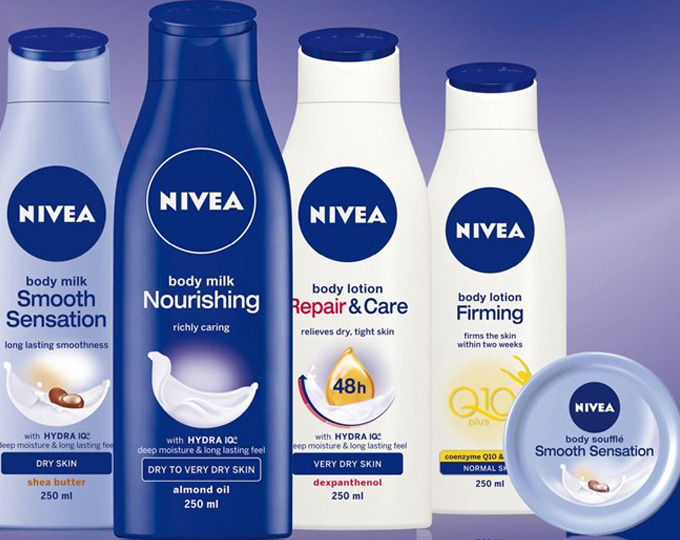

홈 > 브랜드 매거진 > 니베아
니베아
니베아(NIVEA)는 1911년 독일 바이어스도르프(Beiersdorf)가 출시한 글로벌 스킨케어 브랜드다. 세계 최초의 안정적인 유중수(油中水) 유화 크림을 선보이며 대중 스킨케어 시장을 열었고, 파란 틴의 NIVEA Creme가 대표 아이콘이다.
산업 분야 뷰티·퍼스널케어 · 공개 등급 편집 검수 · 브랜드 평가 4.7 ★


한눈에 보는 브랜드
니베아(NIVEA)는 1911년 독일 바이어스도르프(Beiersdorf)가 출시한 글로벌 스킨케어 브랜드다. 세계 최초의 안정적인 유중수(油中水) 유화 크림을 선보이며 대중 스킨케어 시장을 열었고, 파란 틴의 NIVEA Creme가 대표 아이콘이다.
브랜드 관점
니베아는 보편적 보습이라는 포지셔닝으로 100년 넘게 매스 스킨케어 시장을 대표해 온 브랜드다. 헤리티지, 핵심 제품, 모회사 구조를 함께 보면 뷰티·퍼스널케어 안에서의 위치가 또렷해진다.
시작과 성장
니베아(NIVEA)는 독일 화장품 기업 바이어스도르프(Beiersdorf)가 운영하는 대표적인 스킨 케어 브랜드이다. 1911년 최초로 유화제를 개발해 첫 니베아 크림을 세상에 선보인 이래로, 100년이 넘는 시간 동안 한결같이 사랑받아 온 합리적인 브랜드이다.
브랜드 아이덴티티
좋은 제품을 합리적인 가격으로 판매해 온 니베아는 '블루 아젠다(Blue Agenda)‘라는 자체적인 브랜드 비전을 가지고 있다. 상황에 맞는 유연한 브랜드 전략을 효율적으로 실행하여 소비자와의 친숙한 관계 및 신뢰감 형성을 목표로 한다.
확장 지식
독일 함부르크의 바이어스도르프가 운영하며, 유세린·라프레리 등과 함께 매스부터 프리미엄까지 아우르는 스킨케어 포트폴리오를 이룬다.
제품과 서비스
크림·로션·세안·데오드란트·선케어 등 매스 스킨케어 전 범주를 다룬다. 핵심은 보습 크림 계열이며, 모회사 바이어스도르프가 유세린·라프레리 등과 함께 운영한다.
사람들
모회사 바이어스도르프(Beiersdorf)는 1882년 파울 C. 바이어스도르프가 세웠고, NIVEA Creme는 오스카 트로플로비츠 주도로 개발됐다.
현재 상태
타임라인
BI/CI 변천사
함께 읽을 브랜드
 뷰티·퍼스널케어 · 자료 기반설화수
뷰티·퍼스널케어 · 자료 기반설화수설화수(Sulwhasoo)는 아모레퍼시픽이 1997년 론칭한 대한민국의 한방 럭셔리 스킨케어 브랜드다. 한방 원료와 프리미엄 포지셔닝으로 아모레퍼시픽을 대표하는 럭셔...
 뷰티·퍼스널케어 · 자료 기반달바
뷰티·퍼스널케어 · 자료 기반달바달바(d'Alba)는 달바글로벌이 전개하는 대한민국의 프리미엄 비건 스킨케어 브랜드다. 2016년 론칭했으며 화이트 트러플 성분의 미스트 세럼으로 글로벌 베스트셀러를...
 뷰티·퍼스널케어 · 편집 검수도브
뷰티·퍼스널케어 · 편집 검수도브도브(Dove)는 유니레버가 1957년 출시한 비누·바디케어 퍼스널케어 브랜드이다.
LH
LG생활건강
뷰티·퍼스널케어 · 자료 기반LG생활건강LG생활건강(LG H&H Co., Ltd.)은 화장품·생활용품·음료를 아우르는 한국 기업으로, 현 법인은 2001년 LG화학에서 분할 신설됐다.
 뷰티·퍼스널케어 · 자료 기반라운드랩
뷰티·퍼스널케어 · 자료 기반라운드랩라운드랩(ROUND LAB)은 서린컴퍼니가 2017년 선보인 대한민국의 저자극 스킨케어 브랜드다. '1025 독도 토너' 등 순한 기초 라인으로 알려진 클린 뷰티 브...
 뷰티·퍼스널케어 · 자료 기반아비브
뷰티·퍼스널케어 · 자료 기반아비브아비브(ABIB)는 포컴퍼니가 운영하는 한국 스킨케어 화장품 브랜드다.
 뷰티·퍼스널케어 · 자료 기반질레트
뷰티·퍼스널케어 · 자료 기반질레트질레트(Gillette)는 1901년 킹 질레트가 미국에서 설립한 면도기·면도용품 브랜드다. 교체형 안전면도기를 대중화했으며, 현재 P&G 산하의 글로벌 그루밍 대표...
 뷰티·퍼스널케어 · 자료 기반아누아
뷰티·퍼스널케어 · 자료 기반아누아아누아(Anua)는 더파운더즈가 전개하는 대한민국의 저자극 스킨케어 브랜드다. 어성초를 핵심 성분으로 한 진정 토너로 미국·일본 등에서 인기를 얻은 K-뷰티 브랜드다...